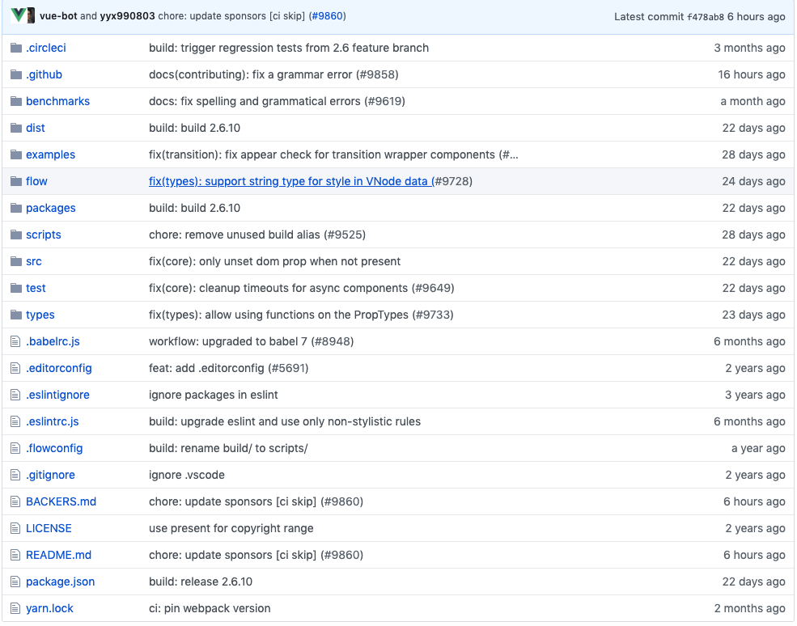

vue 从熟悉api到熟悉源码
github源码地址 https://github.com/vuejs/vue
首先熟悉一下目录结构 当然把代码checkout出来会更方便操作点

yarn.lock 不看 是个包管理工具生成的文件
package.json 这个熟悉 这个相当于工程的索引 经验告诉我们直接看script
"scripts": {
"dev": "rollup -w -c scripts/config.js --environment TARGET:web-full-dev",
"dev:cjs": "rollup -w -c scripts/config.js --environment TARGET:web-runtime-cjs",
"dev:esm": "rollup -w -c scripts/config.js --environment TARGET:web-runtime-esm",
"dev:test": "karma start test/unit/karma.dev.config.js",
"dev:ssr": "rollup -w -c scripts/config.js --environment TARGET:web-server-renderer",
"dev:compiler": "rollup -w -c scripts/config.js --environment TARGET:web-compiler ",
"dev:weex": "rollup -w -c scripts/config.js --environment TARGET:weex-framework",
"dev:weex:factory": "rollup -w -c scripts/config.js --environment TARGET:weex-factory",
"dev:weex:compiler": "rollup -w -c scripts/config.js --environment TARGET:weex-compiler ",
"build": "node scripts/build.js",
"build:ssr": "npm run build -- web-runtime-cjs,web-server-renderer",
"build:weex": "npm run build -- weex",
"test": "npm run lint && flow check && npm run test:types && npm run test:cover && npm run test:e2e -- --env phantomjs && npm run test:ssr && npm run test:weex",
"test:unit": "karma start test/unit/karma.unit.config.js",
"test:cover": "karma start test/unit/karma.cover.config.js",
"test:e2e": "npm run build -- web-full-prod,web-server-basic-renderer && node test/e2e/runner.js",
"test:weex": "npm run build:weex && jasmine JASMINE_CONFIG_PATH=test/weex/jasmine.json",
"test:ssr": "npm run build:ssr && jasmine JASMINE_CONFIG_PATH=test/ssr/jasmine.json",
"test:sauce": "npm run sauce -- 0 && npm run sauce -- 1 && npm run sauce -- 2",
"test:types": "tsc -p ./types/test/tsconfig.json",
"lint": "eslint --fix src scripts test",
"flow": "flow check",
"sauce": "karma start test/unit/karma.sauce.config.js",
"bench:ssr": "npm run build:ssr && node benchmarks/ssr/renderToString.js && node benchmarks/ssr/renderToStream.js",
"release": "bash scripts/release.sh",
"release:weex": "bash scripts/release-weex.sh",
"release:note": "node scripts/gen-release-note.js",
"commit": "git-cz"
}
工程打包用的是rollup 如果不了解的话可以去这里看看 https://www.rollupjs.com/guide/zh
直接看第一个 "dev": "rollup -w -c scripts/config.js --environment TARGET:web-full-dev" 直接看配置文件
const aliases = require('./alias')
const resolve = p => {
const base = p.split('/')[0]
if (aliases[base]) {
return path.resolve(aliases[base], p.slice(base.length + 1))
} else {
return path.resolve(__dirname, '../', p)
}
}
...
'web-full-dev': {
entry: resolve('web/entry-runtime-with-compiler.js'),
dest: resolve('dist/vue.js'),
format: 'umd',
env: 'development',
alias: { he: './entity-decoder' },
banner
}
入口文件已经找到 src/platforms/web/entry-runtime.js
/* @flow */
import Vue from 'core/index'
import config from 'core/config'
import { extend, noop } from 'shared/util'
import { mountComponent } from 'core/instance/lifecycle'
import { devtools, inBrowser, isChrome } from 'core/util/index'
import {
query,
mustUseProp,
isReservedTag,
isReservedAttr,
getTagNamespace,
isUnknownElement
} from 'web/util/index'
import { patch } from './patch'
import platformDirectives from './directives/index'
import platformComponents from './components/index'
// install platform specific utils
Vue.config.mustUseProp = mustUseProp
Vue.config.isReservedTag = isReservedTag
Vue.config.isReservedAttr = isReservedAttr
Vue.config.getTagNamespace = getTagNamespace
Vue.config.isUnknownElement = isUnknownElement
// install platform runtime directives & components
extend(Vue.options.directives, platformDirectives)
extend(Vue.options.components, platformComponents)
// install platform patch function
Vue.prototype.__patch__ = inBrowser ? patch : noop
// public mount method
Vue.prototype.$mount = function (
el?: string | Element,
hydrating?: boolean
): Component {
el = el && inBrowser ? query(el) : undefined
return mountComponent(this, el, hydrating)
}
// devtools global hook
/* istanbul ignore next */
if (inBrowser) {
setTimeout(() => {
if (config.devtools) {
if (devtools) {
devtools.emit('init', Vue)
} else if (
process.env.NODE_ENV !== 'production' &&
process.env.NODE_ENV !== 'test' &&
isChrome
) {
console[console.info ? 'info' : 'log'](
'Download the Vue Devtools extension for a better development experience:\n' +
'https://github.com/vuejs/vue-devtools'
)
}
}
if (process.env.NODE_ENV !== 'production' &&
process.env.NODE_ENV !== 'test' &&
config.productionTip !== false &&
typeof console !== 'undefined'
) {
console[console.info ? 'info' : 'log'](
`You are running Vue in development mode.\n` +
`Make sure to turn on production mode when deploying for production.\n` +
`See more tips at https://vuejs.org/guide/deployment.html`
)
}
}, 0)
}
export default Vue